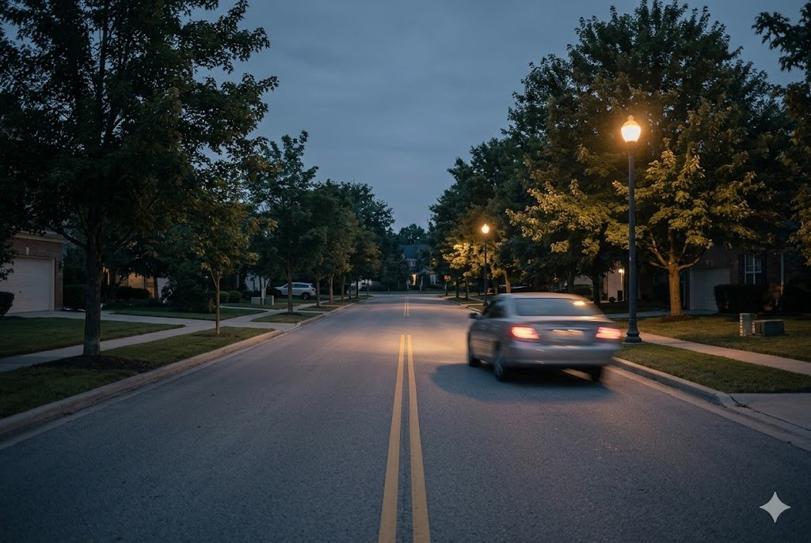

Losing a loved one is devastating, and learning that their death was caused by someone else’s carelessness can make the grief even harder to bear. While no lawsuit can undo your loss, a wrongful death claim can hold the responsible party accountable and provide the financial support your family needs to move forward. The Law Office of Christopher M. Stahl helps grieving families in Shreveport, Bossier City, and throughout Northwest Louisiana seek justice with compassion and care.
What Is a Wrongful Death Claim?
A wrongful death occurs when a person dies because of another party’s negligence, recklessness, or intentional wrongful act. In Louisiana, the wrongful death claim belongs to the surviving family members and compensates them for their own losses — the loss of love, companionship, support, and income that follows the death. It is separate from a survival action, which compensates for the harm the deceased person suffered between the injury and death. The same incident can give rise to both claims.
Who Can File Under La. C.C. art. 2315.2
Louisiana Civil Code article 2315.2 sets out who may bring a wrongful death action, and it does so in a strict order of priority. Only the highest-ranking class that exists at the time of death may file:
- First: the surviving spouse and the children of the deceased.
- Second: if there is no spouse or child, the surviving parents.
- Third: if there is no spouse, child, or parent, the surviving siblings.
- Fourth: if none of the above survive, the surviving grandparents.
If a higher class exists, lower classes generally cannot recover. Because these rules can be complex — especially in blended families — it is wise to confirm who has the right to bring the claim before proceeding.
Common Causes of Wrongful Death
A wrongful death claim can arise from many kinds of negligence, including:
- Motor vehicle accidents, including crashes caused by speeding, distraction, or drunk driving.
- 18-wheeler and commercial truck accidents, which often involve catastrophic force.
- Motorcycle and pedestrian accidents.
- Medical malpractice, such as misdiagnosis or surgical errors.
- Unsafe premises and dangerous property conditions.
- Workplace accidents in high-risk industries.
- Defective products that fail and cause fatal injuries.
Damages a Family May Recover
Louisiana allows surviving family members to recover both economic and non-economic damages for their loss. These may include:
- Loss of financial support — the income the deceased would have provided.
- Loss of love, affection, and companionship.
- Loss of services, guidance, and support the deceased provided to the family.
- Funeral and burial expenses.
- Medical expenses related to the final injury or illness (typically through the related survival action).
- Mental anguish and grief suffered by the survivors.
Punitive damages are generally not available in Louisiana wrongful death cases; the law focuses on compensating the family for actual losses. A survival action may also allow recovery for the pain and suffering the deceased experienced before passing.
Proving a Wrongful Death Case
To succeed, the family generally must show that the defendant owed the deceased a duty of care, breached that duty through negligence or wrongful conduct, and that the breach directly caused the death and resulting losses. Building this proof often requires police reports, medical records, witness statements, and expert testimony — such as accident-reconstruction or medical experts. Because Louisiana follows a pure comparative fault rule under La. C.C. art. 2323, any recovery may be reduced by the percentage of fault attributed to the deceased, but is not automatically barred.
The One-Year Deadline to File
Time is limited. Under Louisiana law, a wrongful death claim generally must be filed within one year from the date of death, consistent with the state’s one-year prescriptive period for tort claims under La. C.C. art. 3492. Exceptions are narrow. For example, where the death resulted from an intentional crime, the law may allow additional time tied to the offender’s conviction, and special rules can apply when minors are involved. Because the standard window is short and exceptions are limited, families should speak with an attorney as soon as they are able.
How We Help Grieving Families
The Law Office of Christopher M. Stahl handles wrongful death claims with sensitivity and determination. We investigate the circumstances of your loved one’s death, identify every responsible party, document the full scope of your family’s losses, and manage the negotiations with insurers so you can focus on healing. If a fair resolution cannot be reached, we are prepared to take the case to court. Our wrongful death cases are handled on a contingency basis, so there are no up-front costs and no attorney’s fee unless we recover for your family.